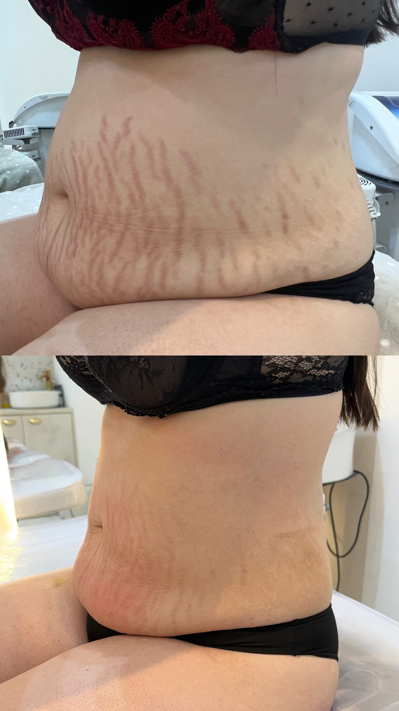
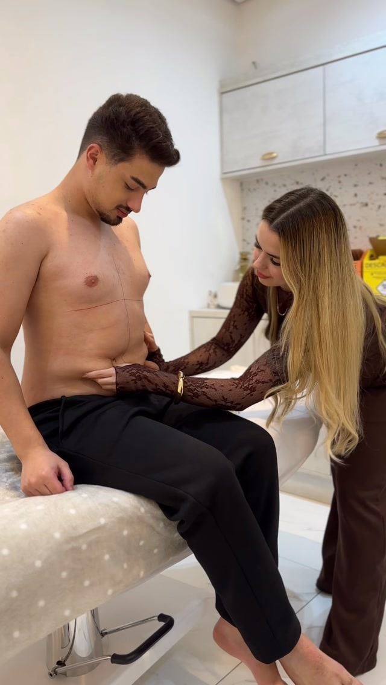

ESTRIAS · MÉTODO R.A.R.SESSÃO 01 A 04 · REGENERAÇÃO TECIDUAL
RESTAURAÇÃO PROFUNDA DE ESTRIAS
Reconstrução dérmica sem cortes e sem tempo de recuperação, reestruturando as fibras elásticas de colágeno.
Consultar Protocolo →
LF CLÍNICA ESTÉTICA É REFERÊNCIA ABSOLUTA EM
BASEADA EM SÃO BERNARDO DO CAMPO · PROTOCOLOS CIENTÍFICOS EXCLUSIVOS PARA O CORPO FEMININO.
CRIADORA DO MÉTODO R.A.R. EXCLUSIVO
TRANSFORMANDO PELES E RESTAURANDO A AUTOESTIMA MATERNA DESDE A PRIMEIRA SESSÃO.
Restauração e Acolhimento Real no pós-parto imediato e tardio, tratando diástase e flacidez de forma integrada.
Agendar pelo WhatsApp ↗Estimulação profunda dos fibroblastos para renovação celular, camuflagem estética e melhora de até 90% no relevo.
Agendar pelo WhatsApp ↗Reativação da musculatura profunda do abdômen através de protocolos fisiológicos sem cirurgia plástica.
Agendar pelo WhatsApp ↗Associação tecnológica para compactação tecidual, queima de adipócitos e síntese acelerada de colágeno tipo I e III.
Agendar pelo WhatsApp ↗O PROPÓSITO SUPREMO DA LF CLÍNICA É
A SUA CONFIANÇA AO SE OLHAR NO ESPELHO, COM RESPEITO À SUA HISTÓRIA E CUIDADO HUMANO DE EXCELÊNCIA.
CHEGA DE ESCONDER O SEU CORPO. VAMOS FALAR SOBRE O SEU
CANAIS DE CONTATO DIRETO ↘
SOLICITAR AVALIAÇÃO COM A DRA. LUANA